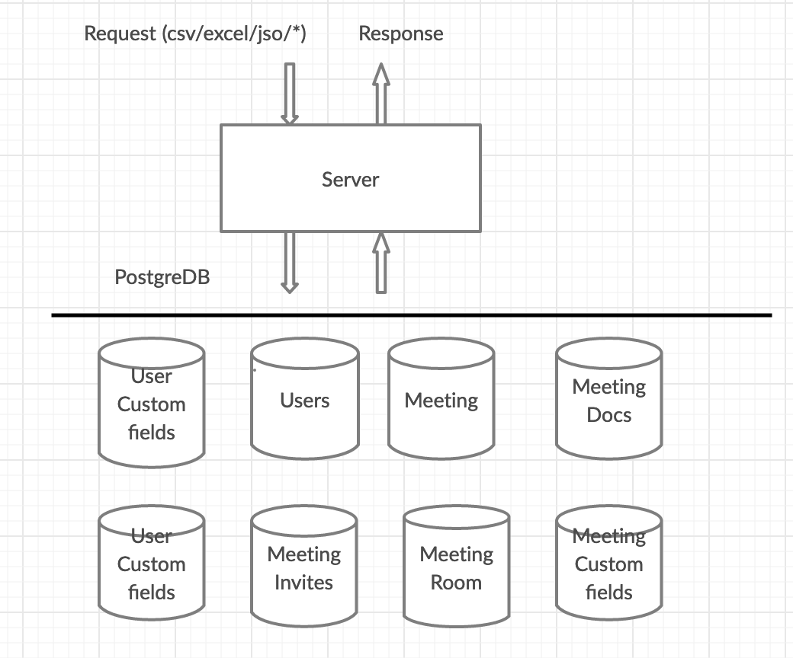

Rails with postgresql views by leveraging active record entity models
Rails + postgresql views/materialized views with versioning and usages
Rails with postgresql views by leveraging active record entity models
Problem Statement
We had a use case where we had to generate a report in an existing meeting scheduler system. This report shows all the data of the report around the meeting.
While showing the report it involves the most complex logic based on role, meetings, meeting attendees, meeting customer information, meeting notes that are being captured. There are around 20+ filters present around the reports.
We had to expose an endpoint which gives back information in a format of attendee and respective meeting. It could be csv, excel or any other format.

Initial implementation of reports in ruby
Initially we have decide to implement all reportings in ruby. The naive approach will include initializing each object and associated objects to the meeting.
This worked well initially for small amount of data. We have encountered performance issues when there are more than 2K meetings and each meeting has approximately 10. Which eventually become 21K objects initialization and storing the data in-memory while processing all of them.
Benchmark.bm { |x| x.report {
MeetingRequest.all.each do |meeting_request|
meeting_request_details = meeting_request.meeting_meta_reports_on_demand(mm_role_uuid, [], ' || ', {template_mode: "separated"})
end
} }
# user system total real
# 444.780000 12.660000 457.440000 (780.303877)
# => [#<Benchmark::Tms:0x000000001ba8cc88 @label="", @real=780.3038765005767, @cstime=0.0, @cutime=0.0, @stime=12.66, @utime=444.78000000000003, @total=457.44000000000005>]
It takes 10 seconds to retrieve the data and to format it. In a real life scenario, we would have to account for the time needed for the request to go through all the stack, from routing to rendering the views. 10 seconds is a lot of time, especially if you have lots of requests coming.
It starts taking more than 60 seconds if the request is having heavy data to manipulate and request.
Working with postgres views
Database view is named query that provides another way to present data in the database tables. A view is defined based on one or more tables which are known as base tables. When you create a view, you basically create a query and assign it a name, therefore a view is useful for wrapping a commonly used complex query.
Postgres has different types of views which are present.
- Logical Views
- Materialized views
Logical Views
They evaluate the data in the tables underlying the view definition at the time the view is queried. It is a logical view of your tables, with no data stored anywhere else.
The upside of a view is that it will always return the latest data to you. The downside of a view is that its performance depends on how good a select statement the view is based on. If the select statement used by the view joins many tables, or uses joins based on non-indexed columns, the view could perform poorly.
Materialized Views
They are similar to regular views, in that they are a logical view of your data (based on a select statement), however, the underlying query result set has been saved to a table. The upside of this is that when you query a materialized view, you are querying a table, which may also be indexed. (source)
Given the fact that we will have a lot of updates at ongoing events and meeting managers expect the reports in real time without any stale data we have decided to go with logical views than materialized views.
Scenic view
I have decided to go with (scenic gem)[https://github.com/scenic-views/scenic] considering convention for versioning views that keeps migration history consistent and reversible and avoids having to duplicate SQL strings across migrations
- Creating a scenic view
$ rails generate scenic:view meeting
Initializing plugins...
create db/views/meetings_v01.sql
create db/migrate/20180916125309_create_meetings.rb
Meeting View can be used as usal active record model and levarage all the functionalities at the same isolate the SQL queries in migration.
# Model
class MeetingView < ApplicationRecord
self.primary_key = :meeting_uuid, :invite_user_uuid
end
# [timestamp]_create_meetings.rb
SELECT
meeting_requests.id AS meeting_id,
meeting_requests.uuid AS meeting_uuid,
meeting_requests.meeting_with as meeting_with,
...
...
...
FROM meeting_requests
LEFT JOIN rooms ON rooms.id = meeting_requests.room_id
LEFT OUTER JOIN topics ON topics.id = meeting_requests.topic_id
...
...
LEFT OUTER JOIN requestor ON requestor.uuid = meeting_requests.requestor_uuid
We have bench makred same format of the response format and see a major shift in the time that it takes to prepare the data to export. Please check the below report
Benchmark.bm { |x| x.report {
meetings, te, tp, cp, pr = MeetingView.all.sort_and_grouping({}.merge({current_location: location}))
settings = MeetingViewUtils::Settings.get_options(meetings, {}.merge({current_location: location}));0
meeting_objs = MeetingViewUtils::MergedMeetingViewSerializer.new(meetings, settings, current_event).ondemand_attribs
} }
# user system total real
# 0.220000 0.000000 0.220000 ( 3.059728)
# => [#<Benchmark::Tms:0x000000002de13138 @label="", @real=3.059727756306529, @cstime=0.0, @cutime=0.0, @stime=0.0, @utime=0.22000000000002728, @total=0.22000000000002728>]
We have gone from 780sec to 3secs
As expected, DB Views approach is 260 times faster than the naive ruby approach. If we have proper indexes for tables on what we are querying then it will be way faster. We are in the process of establishing the proper indexes and db scans while writing a scenic view so that it can improve a lot more.
I’m happy to answer any questions if there are any! HMU in the comments.